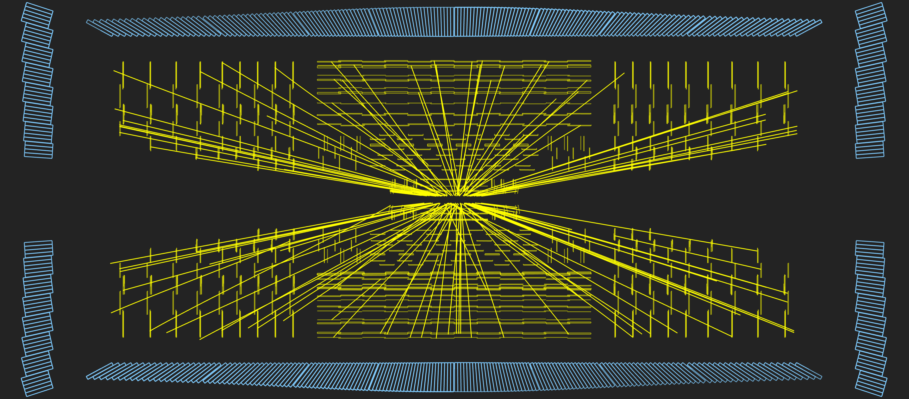
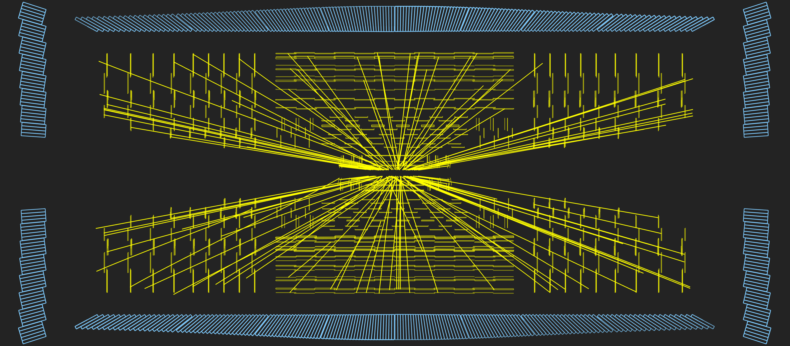
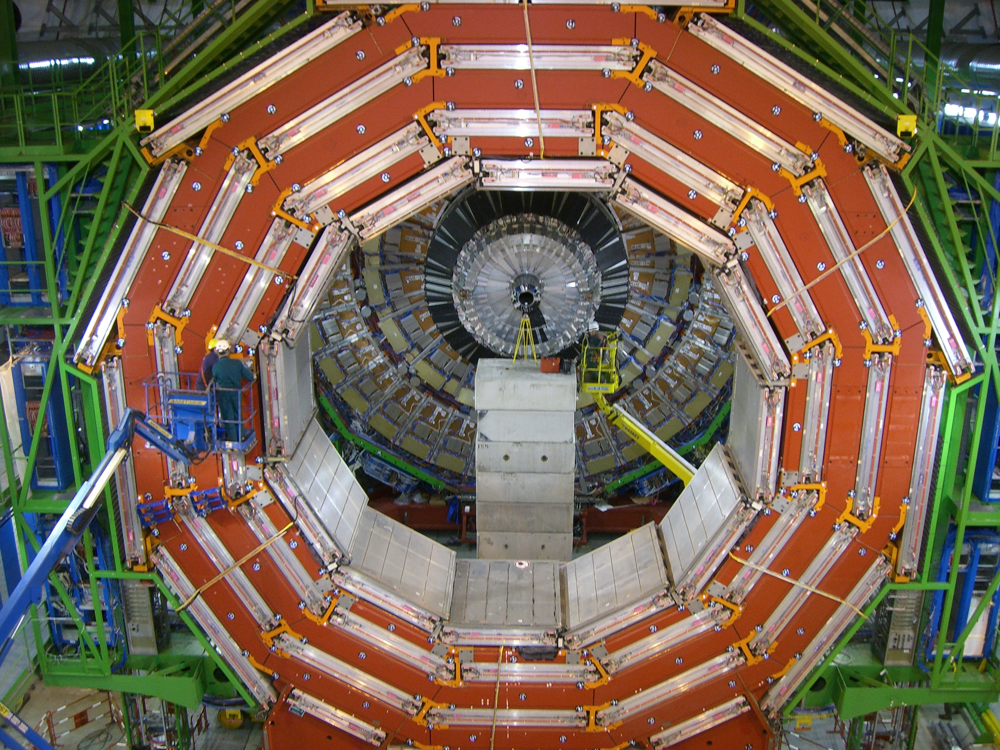
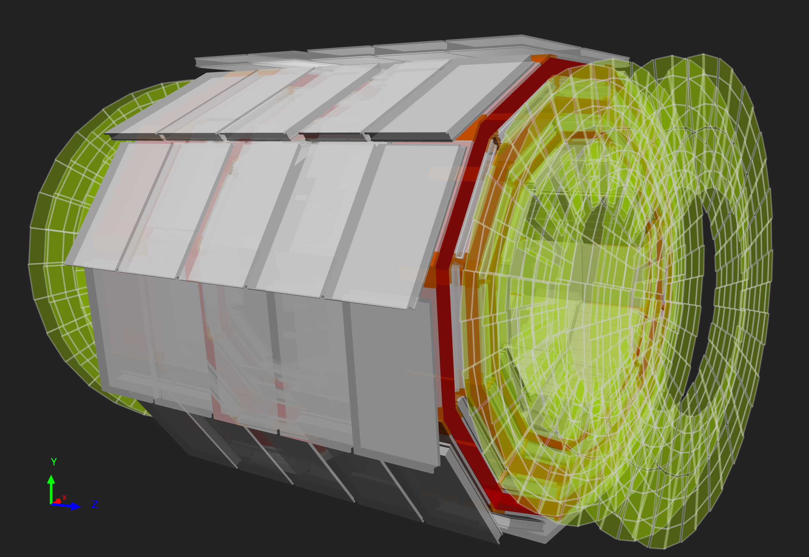
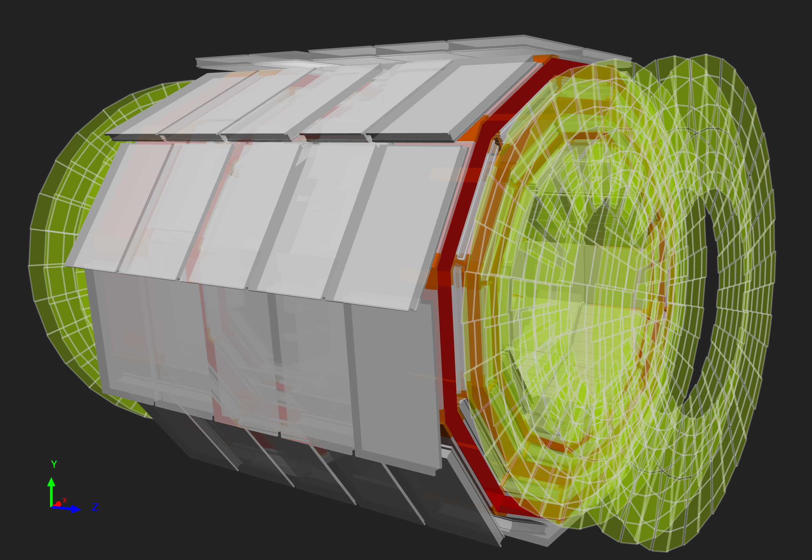

Content from Introduction
Last updated on 2024-07-09 | Edit this page
Overview
Questions
- What is the CMS detector?
- What are the design objectives of the CMS detector?
- What are the main detector components of the CMS detector?
Objectives
- Learn about the CMS detector and how it works.
Introduction and overview
The CMS experiment is 21 m long, 15 m wide and 15 m high, and sits in a cavern that could contain all the residents of Geneva; albeit not comfortably. The detector is like a giant filter, where each layer is designed to stop, track or measure a different type of particle emerging from proton-proton and heavy ion collisions. Finding the energy and momentum of a particle gives clues to its identity, and particular patterns of particles or “signatures” are indications of new and exciting physics

Above: A schematic view of the CMS detector.
The detector is built around a huge solenoid magnet. This takes the form of a cylindrical coil of superconducting cable, cooled to -268.5oC, that generates a magnetic field of 4 Tesla, about 100,000 times that of the Earth.
Detectors consist of layers of material that exploit the different properties of particles to catch and measure the energy and momentum of each one. CMS needed:
- a high performance system to detect and measure muons,
- a high resolution method to detect and measure electrons and photons (an electromagnetic calorimeter),
- a high quality central tracking system to give accurate momentum measurements, and
- a “hermetic” hadron calorimeter, designed to entirely surround the collision and prevent particles from escaping.
Particles emerging from collisions first meet a tracker, made entirely of silicon, that charts their positions as they move through the detector, allowing us to measure their momentum. Outside the tracker are calorimeters that measure the energy of particles. In measuring the momentum, the tracker should interfere with the particles as little as possible, whereas the calorimeters are specifically designed to stop the particles in their tracks.
The Electromagnetic Calorimeter (ECAL) - made of lead tungstate, a very dense material that produces light when hit – measures the energy of photons and electrons whereas the Hadron Calorimeter (HCAL) is designed principally to detect any particle made up of quarks (the basic building blocks of protons and neutrons). The size of the magnet allows the tracker and calorimeters to be placed inside its coil, resulting in an overall compact detector.
As the name indicates, CMS is also designed to measure muons. The outer part of the detector, the iron magnet “return yoke”, confines the magnetic field and stops all remaining particles except for muons and neutrinos. The muon tracks are measured by four layers of muon detectors that are interleaved with the iron yoke. The neutrinos escape from CMS undetected, although their presence can be indirectly inferred from the “missing transverse energy” in the event.
Within the LHC, bunches of particles collide up to 40 million times per second, so a “trigger” system that saves only potentially interesting events is essential. This reduces the number recorded from one billion to around 100 per second.
Below is an interactive 3D model of the CMS detector:
Key Points
- The CMS detector is a large general-purpose detector at the LHC, CERN.
- CMS consists of layers of detector material that exploit the different properties of particles to catch and measure the energy or momentum of each one.
Content from Tracker detector
Last updated on 2024-07-09 | Edit this page
Overview
Questions
- What is the tracker and how does it work?
Objectives
- Learn about the tracker, what it measures, and how it works.
Tracker
Overview
Measuring the momentum of particles is crucial in helping us to build up a picture of events at the heart of the collision. One method to calculate the momentum of a particle is to track its path through a magnetic field; the more curved the path, the less momentum the particle had. The CMS tracker records the paths taken by charged particles by finding their positions at a number of key points.
The tracker can reconstruct the paths of high-energy muons, electrons and hadrons as well as see tracks coming from the decay of very short-lived particles such as beauty or “b quarks” that will be used to study the differences between matter and antimatter.
The tracker needs to record particle paths accurately yet be lightweight so as to disturb the particle as little as possible. It does this by taking position measurements so accurate that tracks can be reliably reconstructed using just a few measurement points. Each measurement is accurate to 10 µm, a fraction of the width of a human hair. It is also the inner most layer of the detector and so receives the highest volume of particles: the construction materials were therefore carefully chosen to resist radiation.
The final design consists of a tracker made entirely of silicon: the pixels, at the very core of the detector and dealing with the highest intensity of particles, and the silicon microstrip detectors that surround it. As particles travel through the tracker the pixels and microstrips produce tiny electric signals that are amplified and detected. The tracker employs sensors covering an area the size of a tennis court, with 75 million separate electronic read-out channels: in the pixel detector there are some 6000 connections per square centimetre.
Pixels
The pixel detector, though only about the size of a small suitcase, contains 124 million pixels, allowing it to track the paths of particles emerging from the collision with extreme accuracy. It is also the closest detector to the beam pipe, with cylindrical layers roughly at 3cm, 7cm, 11cm and 16cm and disks at either end, and so will be vital in reconstructing the tracks of very short-lived particles.
Each of the four layers is composed of individual silicon modules, splitted into little silicon sensors, like tiny kitchen tiles: the pixels. Each of these silicon pixels is 100µm by 150µm, about two hairs widths. When a charged particle passes through a pixel, it gives enough energy to eject the electrons from silicon atoms. A voltage applied to the sensor allows collecting these charges as a small electric signal, which is amplified by an electronic readout chip (for a total of 16 chips per module).
Knowing which pixels have been touched allows us to deduce the particle’s trajectory. And because the detector is made of 2D tiles and has four layers, we can create a three-dimensional picture.
However, being so close to the collision means that the number of particles passing through is huge: the rate of particles received at 3cm from the beamline is around 600 million particles per square centimetre per second! The pixel detector is able to disentangle and reconstruct all the tracks particles leave behind, and withstand such a pummeling over the duration of the experiment.
Strips
After the pixels and on their way out of the tracker, particles pass through ten layers of silicon strip detectors, reaching out to a radius of 130 centimetres.
The silicon strip detector (see the figure below) consists of four inner barrel (TIB) layers assembled in shells with two inner endcaps (TID), each composed of three small discs. The outer barrel (TOB) – surrounding both the TIB and the TID – consists of six concentric layers. Finally two endcaps (TEC) close off the tracker on either end. Each has silicon modules optimised differently for its place within the detector.
This part of the tracker contains 15,200 highly sensitive modules with a total of about 10 million detector strips read by 72,000 microelectronic chips. Each module consists of three elements: one or two silicon sensors, its mechanical support structure and readout electronics.
The silicon detectors work in much the same way as the pixels: as a charged particle crosses the material it knocks electrons from atoms giving a very small pulse of current lasting a few nanoseconds. This small amount of charge is then amplified by Analogue Pipeline Voltage (APV25) chips, giving us “hits” when a particle passes, allowing us to reconstruct its path. Four or six such chips are housed within a “hybrid”, which also contains electronics to monitor key sensor information, such as temperature, and provide timing information in order to match “hits” with collisions.
 |
| 
Above left: An event display view of the CMS tracker (contained within the ECAL barrel) looking along the beam pipe. Right: An event display view of reconstructed tracks.
 | 
| 
Above left: A projected event display view of the CMS tracker (contained within the ECAL barrel and endcaps) looking perpendicular to the beam pipe. Right: A projected event display view of reconstructed tracks.
Key Points
- A particle emerging from the collision and travelling outwards will first encounter the tracking system, made of silicon pixels and silicon strip detectors.
- The tracker accurately measures the positions of passing charged particles allowing physicists to reconstruct their tracks.
Content from Electromagnetic Calorimeter (ECAL)
Last updated on 2024-07-09 | Edit this page
Overview
Questions
- What is the ECAL?
Objectives
- Learn about the ECAL and how it works.
ECAL
The energies of electrons and photons are measured using the CMS electromagnetic calorimeter (ECAL). Measuring their energies with the necessary precision in the very strict conditions of the LHC - a high magnetic field, high levels of radiation, and only 25 nanoseconds between collisions - requires dedicated detector materials.
Lead tungstate crystal is made primarily of metal and is heavier than stainless steel, but with a touch of oxygen in this crystalline form, it is highly transparent and “scintillates” when electrons and photons pass through it. This means it produces light in proportion to the impinging particle’s energy. These high-density crystals produce light in fast, short, well-defined photon bursts that allow for a precise, fast, and fairly compact detector.
The ECAL, made up of a “barrel” section and two “endcaps”, forms a layer between the tracker and the HCAL. The cylindrical barrel consists of 61,200 crystals formed into 36 “supermodules”, each weighing around three tonnes and containing 1700 crystals. The flat endcaps seal off the barrel at each end and are made up of almost 15,000 more crystals.
Photodetectors, which have been especially designed to work within the high magnetic field, are glued onto the back of each of the crystals to detect the scintillation light and convert it to an electrical signal that is amplified and sent for analysis. Avalanche photodiodes or APDs are used in the the crystal barrel, and vacuum phototriodes (VPTs) for the endcaps.
For extra spatial precision, the ECAL also contains a preshower detector that sits in front of the endcaps. These allow CMS to distinguish between single high-energy photons (often signs of exciting physics) and the less interesting close pairs of low-energy photons.
|
Above left: An event display of two electron tracks (green lines). The ECAL barrel and endcaps are shown by the blue volumes and especially in the endcaps one can make out individual crystals. The green volumes respresent the energy deposits in the crystals. Right: A close up of the energy deposits in each crystal.
Key Points
- The ECAL is designed to measure the energies of electrons and photons with great precision.
Content from Hadron Calorimeter (HCAL)
Last updated on 2024-07-09 | Edit this page
Overview
Questions
- What is the HCAL?
Objectives
- Learn about the HCAL and how it works.
HCAL
The Hadron Calorimeter (HCAL) measures the energy of “hadrons”, particles made of quarks and gluons (for example protons, neutrons, pions and kaons). Additionally it provides indirect measurement of the presence of non-interacting, uncharged particles such as neutrinos.
Measuring these particles is important as they can tell us if new particles such as the Higgs boson or supersymmetric particles (much heavier versions of the standard particles we know) have been formed. As these particles decay they may produce new particles that do not leave record of their presence in any part of the CMS detector. To spot these the HCAL must be “hermetic”, that is make sure it captures, to the extent possible, every particle emerging from the collisions. This way if we see particles shoot out one side of the detector, but not the other, with an imbalance in the momentum and energy (measured in the sideways “transverse” direction relative to the beam line), we can deduce that we’re producing “invisible” particles.
To ensure that we’re seeing something new, rather than just letting familiar particles escape undetected, layers of the HCAL were built in a staggered fashion so that there are no gaps in direct lines that a familiar particle might escape through.
The HCAL is a sampling calorimeter [see explanation below] meaning it finds a particle’s position, energy and arrival time using alternating layers of “absorber” and fluorescent “scintillator” materials that produce a rapid light pulse when the particle passes through. Special optic fibres collect up this light and feed it into readout boxes where photodetectors amplify the signal. When the amount of light in a given region is summed up over many layers of tiles in depth, called a “tower”, this total amount of light is a measure of a particle’s energy. As the HCAL is massive and thick, fitting it into “compact” CMS was a challenge, as the cascades of particles produced when a hadron hits the dense absorber material (known as showers) are large, and the minimum amount of material needed to contain and measure them is about one metre.
To accomplish this feat, the HCAL is organised into barrel (HB and HO), endcap (HE) and forward (HF) sections. There are 36 barrel “wedges”, each weighing 26 tonnes. These form the last layer of detector inside the magnet coil whilst a few additional layers, the outer barrel (HO), sit outside the coil, ensuring no energy leaks out the back of the HB undetected. Similarly, 36 endcap wedges measure particle energies as they emerge through the ends of the solenoid magnet.
Lastly, the two hadronic forward calorimeters (HF) are positioned at either end of CMS, to pick up the myriad particles coming out of the collision region at shallow angles relative to the beam line. These receive the bulk of the particle energy contained in the collision so must be very resistant to radiation and use different materials to the other parts of the HCAL.
The CMS barrel and endcap sampling calorimeters are made of repeating layers of dense absorber and tiles of plastic scintillator. When a hadronic particle hits a plate of absorber, in this case brass or steel, an interaction can occur producing numerous secondary particles. As these secondary particles flow through successive layers of absorber they too can interact and a cascade or “shower” of particles results. As this shower develops, the particles pass through the alternating layers of active scintillation material causing them to emit blue-violet light. Within each tile tiny optical “wavelength-shifting fibres”, with a diameter of less than 1mm, absorb this light. These shift the blue-violet light into the green region of the spectrum, and clear optic cables then carry the green light away to readout boxes located at strategic locations within the HCAL volume.
A megatile is a layer of tiles whose sizes depend on their spatial location and orientation relative to the collision, chosen so that each receives roughly the same number of particles. Optic fibres fit into grooves cut into the individual tiles. Because the light picked up gives a measure of energy, the gaps between tiles must be filled with a reflective paint to ensure that light produced in each tile cannot escape into others and vice versa.
- The HCAL measures the energy of “hadrons”, particles made of quarks and gluons (for example protons, neutrons, pions and kaons).
- The HCAL is hermetic, made up of a barrel, endcaps, and forrward and outer detectors.
Content from Superconducting magnet
Last updated on 2024-07-09 | Edit this page
Overview
Questions
- What is the magnet in CMS and what does it do?
Objectives
- Learn about the magnet and how it works.
Magnet

The CMS magnet is the central device around which the experiment is built, with a 4 Tesla magnetic field that is 100,000 times stronger than the Earth’s.
Its job is to bend the paths of particles emerging from high-energy collisions in the LHC. The more momentum a particle has the less its path is curved by the magnetic field, so tracing its path gives a measure of momentum. CMS began with the aim of having the strongest magnet possible because a higher strength field bends paths more and, combined with high-precision position measurements in the tracker and muon detectors, this allows accurate measurement of the momentum of even high-energy particles.
The CMS magnet is a “solenoid” - a magnet made of coils of wire that produce a uniform magnetic field when electricity flows through them. The CMS magnet is “superconducting”, allowing electricity to flow without resistance and creating a powerful magnetic field. In fact at ordinary temperatures the strongest possible magnet has only half the strength of the CMS solenoid.
The tracker and calorimeter detectors (ECAL and HCAL) fit snugly inside the magnet coil whilst the muon detectors are interleaved with a 12-sided iron structure that surrounds the magnet coils and contains and guides the field. Made up of three layers this “return yoke” reaches out 14 metres in diameter and also acts as a filter, allowing through only muons and weakly interacting particles such as neutrinos. The enormous magnet also provides most of the experiment’s structural support, and must be very strong itself to withstand the forces of its own magnetic field.
Key Points
- The CMS magnet is the central device around which the experiment is built, with a 3.7 Tesla magnetic field.
- The magnet’s job is to bend the paths of particles emerging from high-energy collisions.
- The strong magnetic field, combined with high-precision position measurements in the tracker and muon detectors, this allows accurate measurement of the momentum of even high-energy particles.
- The CMS magnet is a superconducting solenoid.
- The tracker and calorimeter detectors (ECAL and HCAL) fit snugly inside the magnet.
Content from Muon detectors
Last updated on 2024-07-09 | Edit this page
Overview
Questions
- What are the muon detectors in CMS and how do they work?
Objectives
- Learn about the muon detectors and how it works.
Muon detectors

Overview
As the name “Compact Muon Solenoid” suggests, detecting muons is one of CMS’s most important tasks. Muons are charged particles that are just like electrons and positrons, but are 200 times heavier.
Because muons can penetrate several metres of iron without interacting, unlike most particles they are not stopped by any of CMS’s calorimeters. Therefore, chambers to detect muons are placed at the very edge of the experiment where they are the only particles likely to register a signal.
A particle is measured by fitting a curve to hits among the four muon stations, which sit outside the magnet coil and are interleaved with iron “return yoke” plates (shown in red below, for the barrel region). By tracking its position through the multiple layers of each station, combined with tracker measurements the detectors precisely trace a particle’s path. This gives a measurement of its momentum because we know that particles travelling with more momentum bend less in a magnetic field. As a consequence, the CMS magnet is very powerful so we can bend even the paths of very high-energy muons and calculate their momenta.
In total there are 1400 muon chambers: 250 drift tubes (DTs) and 540 cathode strip chambers (CSCs) track the particles’ positions and provide a trigger, while 610 resistive plate chambers (RPCs) form a redundant trigger system, which quickly decides to keep the acquired muon data or not. Because of the many layers of detector and different specialities of each type, the system is naturally robust and able to filter out background noise.
DTs and RPCs are arranged in concentric cylinders around the beam line (“the barrel region”) whilst CSCs and RPCs, make up the “endcaps” disks that cover the ends of the barrel.

Drift tubes
 | 
Above left: Installation of a wheel of drift tubes. Right: Event display of two muons seen in CMS with matching drift tubes.
The drift tube (DT) system measures muon positions in the barrel part of the detector. Each 4-cm-wide tube contains a stretched wire within a gas volume. When a muon or any charged particle passes through the volume it knocks electrons off the atoms of the gas. These follow the electric field ending up at the positively-charged wire.
By registering where along the wire electrons hit (in the diagram, the wires are going into the page) as well as by calculating the muon’s original distance away from the wire (shown here as horizontal distance and calculated by multiplying the speed of an electron in the tube by the time taken) DTs give two coordinates for the muon’s position.
Each DT chamber, on average 2m x 2.5m in size, consists of 12 aluminium layers, arranged in three groups of four, each up with up to 60 tubes: the middle group measures the coordinate along the direction parallel to the beam and the two outside groups measure the perpendicular coordinate.

Cathode Strip Chambers
Cathode strip chambers (CSC) are used in the endcap disks where the magnetic field is uneven and particle rates are high.


CSCs consist of arrays of positively-charged “anode” wires crossed with negatively-charged copper “cathode” strips within a gas volume. When muons pass through, they knock electrons off the gas atoms, which flock to the anode wires creating an avalanche of electrons. Positive ions move away from the wire and towards the copper cathode, also inducing a charge pulse in the strips, at right angles to the wire direction.
Because the strips and the wires are perpendicular, we get two position coordinates for each passing particle. In addition to providing precise space and time information, the closely spaced wires make the CSCs fast detectors suitable for triggering. Each CSC module contains six layers making it able to accurately identify muons and match their tracks to those in the tracker.

Resistive Plate Chambers

Resistive plate chambers (RPC) are fast gaseous detectors that provide a muon trigger system parallel with those of the DTs and CSCs.
 |
|  | 
| 
Above: The positions of the RPCs in the barrel and endcaps highlighted in green.
RPCs consist of two parallel plates, a positively-charged anode and a negatively-charged cathode, both made of a very high resistivity plastic material and separated by a gas volume.
When a muon passes through the chamber, electrons are knocked out of gas atoms. These electrons in turn hit other atoms causing an avalanche of electrons. The electrodes are transparent to the signal (the electrons), which are instead picked up by external metallic strips after a small but precise time delay. The pattern of hit strips gives a quick measure of the muon momentum, which is then used by the trigger to make immediate decisions about whether the data are worth keeping. RPCs combine a good spatial resolution with a time resolution of just one nanosecond (one billionth of a second).
Key Points
- There are three main muon detector systems in CMS: the drift tubes, cathode strip chambers, and resistive plate chambers.